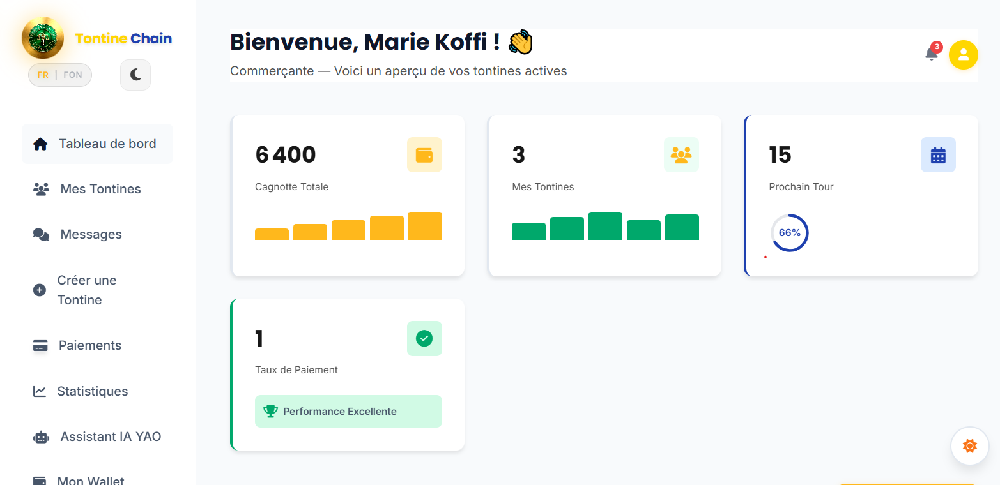

Vos Tontines
Sécurisées par la Blockchain

Les Tontines Béninoises en Danger
Au Bénin, les tontines gèrent entre 400 et 600 millions USD par an, soit environ 200 milliards de FCFA. Pourtant, ce système d'épargne informel, pilier de l'économie locale et soutien vital pour 70% de femmes entrepreneures, souffre de problèmes structurels majeurs qui menacent l'épargne de milliers de familles.
Un Système Vital mais Fragile
Les tontines, appelées localement "Adôgbè" en langue Fon, constituent le principal mécanisme d'épargne et de crédit pour les populations non bancarisées du Bénin. Chaque semaine, des milliers de groupes se réunissent dans les marchés de Dantokpa, les quartiers de Porto-Novo, ou les villages ruraux.
Ces groupes, composés majoritairement de commerçantes, d'artisanes et de petites entrepreneures, mettent en commun leurs économies dans l'espoir de financer leurs projets : achat de stock, scolarité des enfants, équipements professionnels.
Mais la réalité est alarmante : selon l'ANSSFD (Agence Nationale de Surveillance des Systèmes Financiers Décentralisés), plus de 600 plaintes ont été enregistrées rien qu'à Porto-Novo en 2021, et ce chiffre ne représente qu'une fraction des incidents réels.
Le Phénomène de la "Cale Sèche"
La disparition du collecteur avec la cagnotte collective est le cauchemar de toute tontine.
Comment ça se passe ?
- Le collecteur, souvent une personne de confiance, accumule les cotisations hebdomadaires
- Au moment de la distribution, il disparaît avec l'argent
- Les membres perdent des mois, voire des années d'épargne
- Aucun recours légal efficace (système informel)
Carnets Falsifiés et Absence de Traçabilité
Les registres physiques sont la seule preuve des transactions, mais ils sont facilement manipulables.
Les risques :
- Carnets perdus ou détruits (pluie, feu, vol)
- Modifications des montants ou de l'ordre des bénéficiaires
- Contestations impossibles à résoudre
- Mémoire collective défaillante après plusieurs mois
Femmes Entrepreneures : Les Premières Victimes
70% des participantes aux tontines sont des femmes qui utilisent ce système pour financer leurs activités.
Pourquoi sont-elles vulnérables ?
- Exclusion du système bancaire formel (pas de garanties)
- Revenus irréguliers (commerce, artisanat)
- Dépendance totale à la tontine pour le capital de travail
- Perte d'épargne = impossibilité de travailler
La Blockchain au Service des Tontines Béninoises
TontineChain utilise la technologie blockchain pour éliminer définitivement les risques de détournement, garantir une transparence totale et automatiser la gestion des tontines. Une solution technique éprouvée, adaptée au contexte béninois.
Architecture Smart Contract Factory
TontineChain repose sur une architecture blockchain innovante qui crée un smart contract indépendant pour chaque groupe de tontine. Cette approche garantit l'isolation totale des fonds et l'impossibilité de détournement.
1. Création du Groupe
Les membres définissent les règles : montant, fréquence, ordre des bénéficiaires
2. Factory Déploie
Un smart contract unique est créé automatiquement sur un réseau sécurisé.
3. Fonds Sécurisés
Les cotisations sont verrouillées dans le contrat immuable
4. Distribution Auto
La cagnotte est libérée automatiquement au bénéficiaire
Sécurité Absolue par Smart Contracts
Les smart contracts sont des programmes informatiques auto-exécutables déployés sur la blockchain. Une fois déployés, ils deviennent immuables et inviolables.
Chaque groupe possède son propre contrat. Les fonds d'un groupe ne peuvent jamais être mélangés à ceux d'un autre.
Aucun humain, pas même l'organisateur ou le développeur, ne peut retirer les fonds. Seul le smart contract peut libérer l'argent selon les règles programmées.
Nos contrats utilisent les bibliothèques OpenZeppelin, standard de sécurité reconnu mondialement dans l'industrie blockchain.
Transparence Totale et Traçabilité
Chaque transaction est enregistrée de manière permanente et publique sur la blockchain. Impossible de falsifier, modifier ou effacer l'historique.
Toutes les cotisations, tous les versements, toutes les dates sont gravés dans la blockchain. Aucune contestation possible.
Chaque membre peut vérifier l'état de la tontine directement sur la blockchain, sans dépendre de l'organisateur.
L'historique blockchain peut servir de preuve d'épargne pour accéder au crédit bancaire formel.
Automatisation Intelligente
Le smart contract applique automatiquement les règles définies par le groupe. Plus besoin de faire confiance à un collecteur humain.
Dès que toutes les cotisations du tour sont reçues, la cagnotte est automatiquement transférée au bénéficiaire désigné.
Le contrat détecte automatiquement les retards de paiement et applique les sanctions prévues (malus, pénalités).
Chaque membre reçoit des alertes automatiques pour les échéances, les paiements reçus, et les distributions.
Stack Technique Éprouvée
L'Espace Innovation
Des outils intelligents pour une tontine simplifiée et connectée
Assistant IA YAO
Votre conseiller financier personnel disponible 24/7. Posez des questions sur vos gains, obtenez des rappels intelligents et optimisez votre épargne.
Essayer YAOMessagerie Intégrée
Discutez en temps réel avec les membres de votre tontine. Partagez des reçus, coordonnez les ordres de passage et restez connectés à votre communauté.
- Envoi de reçus sécurisé
- Notes vocales & Médias
Pourquoi la Blockchain ?
Trois propriétés fondamentales qui résolvent les problèmes des tontines traditionnelles
Immuabilité
Une fois les règles inscrites dans le smart contract, elles ne peuvent plus être modifiées. Ni l'organisateur, ni un membre, ni même le développeur ne peut changer le montant des cotisations, l'ordre des bénéficiaires ou les conditions de distribution.
Automatisation
Le smart contract exécute automatiquement les actions programmées : vérification des paiements, calcul de la cagnotte, libération des fonds au bénéficiaire. Aucune intervention humaine n'est nécessaire, éliminant ainsi les risques d'erreur ou de manipulation.
Transparence
Toutes les transactions sont enregistrées publiquement sur la blockchain. Chaque membre peut vérifier à tout moment qui a payé, combien, et quand. L'historique complet est accessible, vérifiable et infalsifiable par tous.
Impact Attendu de TontineChain
Des objectifs mesurables alignés sur les Objectifs de Développement Durable (ODD) des Nations Unies
Objectifs de Développement Durable (ODD) Ciblés
Pas de Pauvreté
Protection de l'épargne des populations vulnérables contre les détournements
Égalité entre les Sexes
Autonomisation économique des femmes entrepreneures (70% des bénéficiaires)
Travail Décent et Croissance
Accès au capital pour les micro-entreprises et artisans
Réduction des Inégalités
Inclusion financière des populations non bancarisées
Paix, Justice et Institutions
Réduction des litiges et renforcement de la confiance sociale
Partenariats
Collaboration avec ANSSFD, institutions financières et organisations locales
"TontineChain n'est pas qu'une solution technique. C'est un outil d'émancipation économique pour les femmes béninoises, un pont entre la finance traditionnelle et la finance décentralisée, et une preuve que la blockchain peut servir l'inclusion financière en Afrique."
Quatre Étapes vers l'Épargne Moderne
4 étapes pour sécuriser votre tontine sur la blockchain
Créez votre Groupe
Définissez les membres, le montant des cotisations, la fréquence et l'ordre des bénéficiaires.
Smart Contract Déployé
Un contrat unique et immuable est créé pour votre groupe sur un réseau sécurisé et performant.
Cotisations Automatiques
Chaque membre paie sa cotisation directement dans le smart contract. Tout est tracé.
Cagnotte Libérée
Le bénéficiaire du tour reçoit automatiquement la cagnotte. Zéro intervention humaine.
Tout ce que vous devez savoir
Réponses claires aux questions les plus posées sur TontineChain
Sécurité & Confiance
Les fonds sont verrouillés dans un smart contract immuable sur la blockchain. Aucun humain, pas même l'organisateur ou les développeurs de TontineChain, ne peut accéder à l'argent. Seul le smart contract peut libérer les fonds selon les règles programmées et acceptées par tous les membres au départ.
Un smart contract est un programme informatique auto-exécutable déployé sur la blockchain. Une fois déployé, il devient immuable (impossible à modifier) et transparent (tout le monde peut vérifier son code). Il exécute automatiquement les règles définies sans intervention humaine, éliminant ainsi tout risque de manipulation ou de détournement.
Oui, absolument. Seules les transactions financières sont enregistrées sur la blockchain (de manière pseudonyme). Vos informations personnelles (nom, téléphone, email) sont stockées de manière sécurisée et chiffrée dans nos serveurs, conformément aux normes internationales de protection des données.
Fonctionnement
C'est très simple : 1) Créez votre compte en 2 minutes, 2) Définissez les paramètres de votre tontine (montant, fréquence, nombre de membres), 3) Invitez vos membres via WhatsApp ou SMS, 4) Une fois tous les membres inscrits, le smart contract est automatiquement déployé. Votre tontine est prête !
Absolument pas ! TontineChain est conçu pour être aussi simple qu'une application mobile classique. Toute la complexité technique de la blockchain est gérée en arrière-plan. Vous utilisez l'interface comme n'importe quelle application de paiement mobile (MTN Mobile Money, Moov Money).
Le smart contract envoie automatiquement des rappels par SMS et WhatsApp. Si le membre ne paie pas dans le délai défini, il est marqué comme "en retard" et visible par tous les membres. Le groupe peut décider collectivement des actions à prendre (pénalités, exclusion, etc.) selon les règles définies au départ.
Paiements & Frais
TontineChain prélève une commission de 2% sur chaque transaction (cotisation ou distribution). Par exemple, pour une cotisation de 10 000 FCFA, les frais sont de 200 FCFA. Ces frais couvrent les coûts de la blockchain, de la maintenance et du support client. Aucun frais caché, tout est transparent.
Vous pouvez payer directement via Mobile Money (MTN, Moov), carte bancaire, ou virement bancaire. Les paiements sont instantanés et sécurisés. Dès que votre paiement est confirmé, il est automatiquement enregistré dans le smart contract.
Dès que c'est votre tour et que toutes les cotisations du cycle sont complètes, le smart contract libère automatiquement la cagnotte. Le transfert vers votre compte Mobile Money ou bancaire prend entre 5 minutes et 2 heures maximum selon votre opérateur.
Support & Assistance
Notre équipe support est disponible 7j/7 de 8h à 20h via WhatsApp, téléphone ou email. Nous parlons français et fon. Temps de réponse moyen : moins de 30 minutes. Pour les urgences (blocage de fonds, problème de paiement), nous intervenons immédiatement.
Oui ! TontineChain fonctionne partout au Bénin où vous avez accès à Internet (3G/4G/WiFi). Que vous soyez à Cotonou, Porto-Novo, Parakou, Abomey ou dans un village rural, vous pouvez utiliser TontineChain depuis votre smartphone.
Oui ! La création de compte et la création de votre première tontine sont totalement gratuites. Vous ne payez que lorsque vous effectuez des transactions réelles (cotisations). Vous pouvez tester l'interface, inviter des membres et explorer toutes les fonctionnalités sans aucun engagement.
Vous avez d'autres questions ?
Notre équipe est là pour vous aider
Sécurisez Votre Épargne Collective
Rejoignez la révolution blockchain des tontines béninoises
Démarrer Maintenant